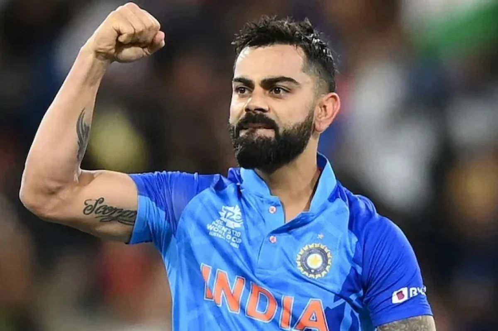
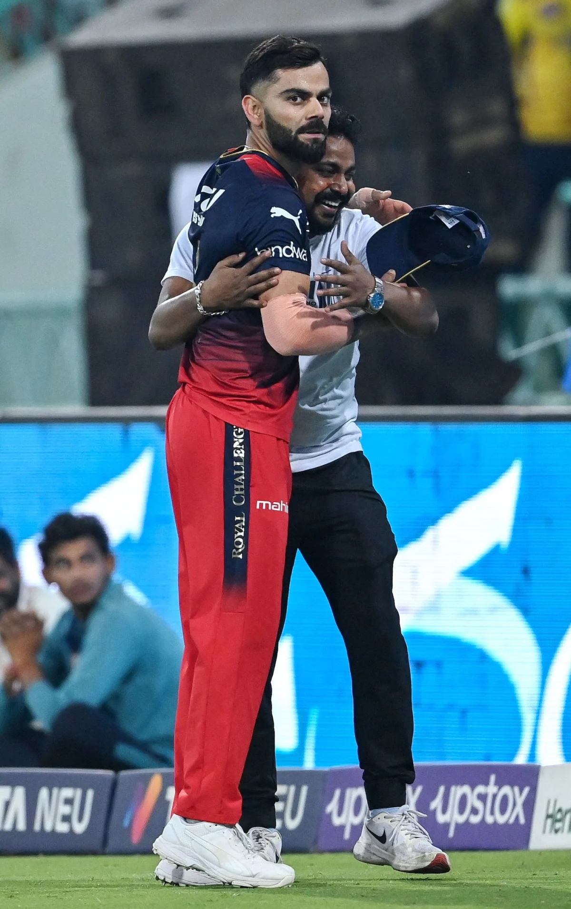

Biography
Virat Kohli, born on November 5, 1988, in Delhi, India, is one of the most celebrated cricketers of our time...
Known for his aggressive and technically sound batting, Virat made his debut for the Indian cricket team in August 2008...
Throughout his career, Kohli has set numerous records, won prestigious awards, and achieved unparalleled success...
He served as the captain of the Indian national cricket team and played a pivotal role in India's victories...
Achievements
- ICC Cricketer of the Year multiple times
- Rajiv Gandhi Khel Ratna, India's highest sporting honor
- Padma Shri, India's fourth-highest civilian award
- Most centuries in ODI cricket for India
- Leading run-scorer in T20 internationals
- Record for the fastest century in ODIs
Records
- Fastest to score 8,000, 9,000, 10,000, and 11,000 runs in ODIs
- Most centuries in ODIs as a captain
- Leading run-scorer in IPL history
- Consistent performance in Test cricket
Awards
- Wisden Cricketer of the Year
- Sir Garfield Sobers Trophy for ICC Cricketer of the Year
- Multiple BCCI Awards
Photos

Virat in action

Virat with fans